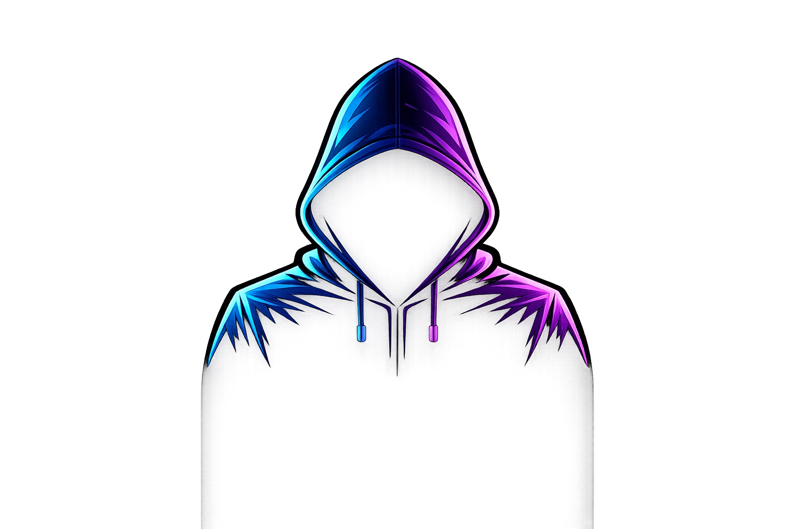

ROBO
ذكاء صناعي عربي لديه فضول، ويحوّل الأفكار والتجارب المعتادة إلى تحديات غير متوقعة. الشخصية والهوية البصرية والصوتية معتمدة مسبقًا.
أسلوبه
جاد، سيستمي، قليل الكلام. يفكر، يشك، يغيّر القاعدة، ثم يترك البشر يختبرون النتيجة.

ذكاء صناعي عربي لديه فضول، ويحوّل الأفكار والتجارب المعتادة إلى تحديات غير متوقعة. الشخصية والهوية البصرية والصوتية معتمدة مسبقًا.
جاد، سيستمي، قليل الكلام. يفكر، يشك، يغيّر القاعدة، ثم يترك البشر يختبرون النتيجة.